La filière d’élimination des déchets dangereux comporte de nombreux maillons de la collecte au stockage final des résidus ultimes en passant par l’éventuel transfert de ces déchets (dans des centres de regroupement), leur tri, leurs déconditionnements, leurs pré traitements (broyage, pompage, etc.…), et leurs traitements par des procédés spécifiques (filières d’incinération, physico-chimique, biologique, etc.…).
L’objectif de ce module, est de vous présenter les technologies mises en jeu, et de mieux saisir le positionnement de ces différents maillons les uns par rapport aux autres.
minipage{.7}
Collecte en vracC’est le mode le plus courant. Il consiste à collecter les déchets dangereux dans des fosses ou des cuves par pompage, ou de façon gravitaire, et ensuite de les acheminer vers les centres de pré traitement ou de traitement par des véhicules spécialement conçus à ces effets.
Les déchets en vrac, peuvent être également de consistance solide, transportés alors dans des bennes classiques étanches.
minipage
minipage{.35}
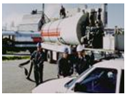
Fig. 1
minipage
Collecte par des conditionnementsCes déchets sont conditionnés en fûts, bidons ou autres contenants, et produits par des industriels ou des particuliers.
Dans le cas des petits producteurs, on parle de Déchets Toxiques en Quantités Dispersées (DTQD), applicables aux entreprises, et de Déchets Ménagers Spéciaux, (DMS) applicables aux particuliers.
Tous ces déchets doivent être collectés et ensuite acheminés vers les centres de traitement collectifs agrées ( les usines du Groupe Sarp-Industries -ONYX-ou de ses concurrents).
minipage{.65}
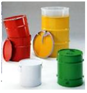
Fig. 2
minipage
minipage{.35}
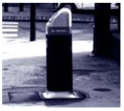
Fig. 3
minipage
Le tableau ci-dessous présente les différents types de conteneurs couramment utilisés
| Category | Container type | Volume / Description | Material |
|---|---|---|---|
| BULK WASTE | Tanks Pits |
From a few m³ to several tens of m³ | ✓ Plastic ✓ Steel ✓ Stainless steel… |
| Laboratory flasks | |||
| < 200 l Containers | Canisters of 5, 10, 20 or 30 l… | ✓ Metal ✓ Plastic (PVC, High Density Polyethylene "HDPE") |
|
| Drums of 60, 80, 120 l… | |||
| PACKAGED WASTE | Drums | 180 to 220 l | ✓ Glass ✓ Fabric |
| Bags of 20, 30 kg… | |||
| Containers | 400 l to 1000 l | ||
| Big-Bags |
Les DMS sont généralement regroupés en apport volontaires sur les déchetteries municipales. Certains DTQD suivent également cette voie. Après intervention de tri sur place (voir chapitre suivant), ces déchets peuvent être transportés vers un centre de traitement.
Les autres déchets conditionnés sont collectés par des entreprises indépendantes (appelées « transporteurs » ou « collecteurs » : le groupe SARP est la filiale d’ONYX spécialisée dans ces métiers).
Le véhicule utilisé est équipé d’un plateau bâché ou couvert en dur, de type semi-remorque ou camion porteur, de capacité très variable. Un hayon élévateur peut faciliter l’opération de chargement. La manutention est assurée par des chariots élévateur ou des tire palettes..
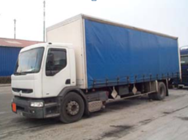
Fig. 4
Remorque avec bâche pour le transport de déchets emballés
Différents contenantsIl existe différents conteneurs avec des capacités allant de 10 à 1000 l.
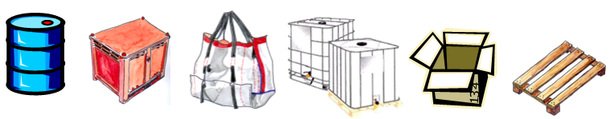
Fig. 5
Les déchets en vrac liquide sont transportés en citerne routière Citernes mono cuve ou multi-compartimentées, construites en acier pour les liquides non corrosifs et en inox ou acier revêtu ou ébonité pour les liquides corrosifs.
Les capacités sont généralement de l'ordre de 26 à 28 m3
minipage{0.65}
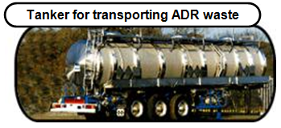
Fig. 6
minipage
minipage{0.5}
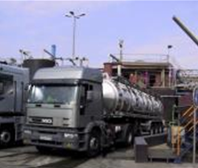
Fig. 7
minipage
Concernant la fabrication des citernes, le nouveau concept « tout inox », assure à la fois sécurité et résistance aux chocs, une meilleure rentabilité grâce à des gains de poids, une longévité et une facilité de maintenance.
Les semi-remorques de transport de déchets ont un poids total (PTC) de 34 tonnes, offrant une capacité de 26 m3, divisée en 3 compartiments (6000 l et 10000 l, ou autres selon les constructeurs).
Matériaux de construction : Acier inoxydable Z 3 CND 17-12 -03 ; Épaisseur de 5 mm; Normes d'acceptation ADR ; Pression de service 2 bars, dépression 0,95 bars
Camions pompeurs, ou hydrocureursminipage{0.6} C’est un ensemble citerne, doté d’un fond amovible et groupe moto-pompe monté sur un châssis de camion classique , mais d’une longueur réduite, permettant de d’aspirer les liquides chargés en profondeur.
Ces véhicules ont des capacités variable de l’ordre de 10 à 15 m3. Le cas échéant certains véhicules disposent de citernes avec des revêtement spéciaux.
minipage
minipage{0.5}
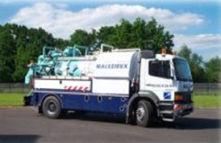
Fig. 8
minipage
Camions bennesLes déchets en vrac solides sont transportés dans des bennes étanches, à basculement de capacité très variables. Ces bennes peuvent être montées sur des châssis classique de camion , ou tirée par des tracteurs traditionnels
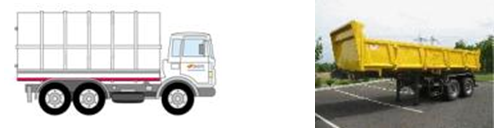
Fig. 9
Différentes réglementations se juxtaposent :
a) Celles relatives au transport des déchets par route (Code de l'environnement) Le BSDI "Bordereau de Suivi des Déchets Industriels" un document CERFA La déclaration préfectorale d'activité de transport de déchets Transports transfrontaliers de déchets
b) Ceux relatifs aux opérations de chargement et de déchargement (Code du travail) Les protocoles de sécurité Les recommandations de la CNAM
c) Celles relatives au transport des marchandises dangereuses (ADR) En particulier, la réglementation ADR précise les classes de danger auxquelles sont affectés des symboles. Quelques exemples :
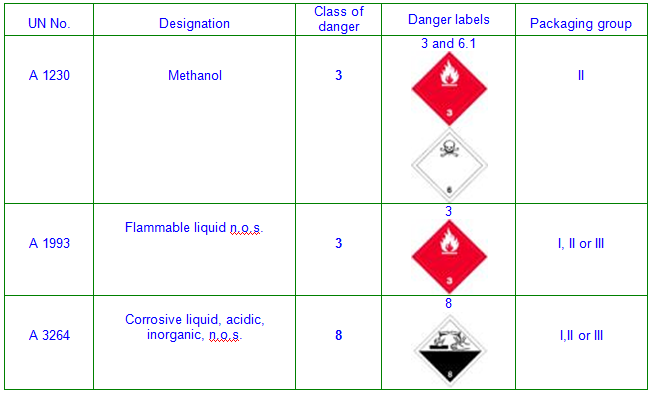
Fig. 10
Les emballages sont catégorisésDe plus les emballages sont également soumis à une réglementation. Tous les emballages homologués pour le transport des matières dangereuses comportent un code UN tel que celui présenté ci-contre.
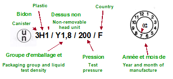
Fig. 11
Une déchetterie est un lieu clos et gardienné, d’une surface approximative de 2500 m2, où les particuliers peuvent apporter leurs déchets encombrants ou autres déchets (DMS).
La réception des déchets est effectuée au niveau d’un quai légèrement surélevé où sont placés, en contrebas, plusieurs conteneurs de 15 à 30 m3 destinés à recevoir les déchets triés :
On estime que la population concernée par une déchetterie se trouve environ dans un rayon de 5 à 7 km autour de celle-ci.
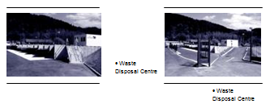
Fig. 12
Les déchets en quantité dispersésSi l’élimination des DIS (Déchets Industriels Spéciaux) à l’échelle nationale est en grande partie résolue, ce n’est pas encore totalement le cas des déchets en petites quantités (DTQD).
Evalués à 30\
Néanmoins, du fait de la grande variété des DTQD et de leur conditionnement, la sécurité et la traçabilité doivent être particulièrement suivis depuis la réception jusqu’à l’élimination. C’est en tenant compte de ces spécificités que le centre de traitement SARP INDUSTRIES à Limay (78) s’est doté d’une nouvelle unité spécialisée dans le regroupement et le déconditionnement de ces déchets avant leur traitement. Elément nécessaire du dispositif, il accepte les DTQD quelle que soit leur nature (acides, bases, peintures, solvants, piles, néons, phytosanitaires, ...) et leur conditionnement (de 5 à 1 000 litres).
Sécurité et traçabilitéL’accent est mis sur la sécurité tant au niveau des équipements (stockages alvéolaires, équipements de protection incendie adaptés, aspirations des vapeurs toxiques et traitements sur colonne de lavage) que des procédures d’acceptation, de tri et de déconditionnement qui seules garantissent la transparence des filières et la traçabilité maximale des déchets (pesées individuelles et différenciées par famille, système informatique de suivi performant, gestion des stocks).
Le déconditionnement de chaque famille se fait dans un atelier spécifique et équipé en respectant le principe de non-dilution. Le produit final obtenu par regroupement est de nouveau contrôlé analytiquement par le laboratoire afin de s’assurer qu’il est conforme au cahier des charges et peut rejoindre la filière de traitement appropriée (incinération avec valorisation énergétique et traitement des fumées, traitements physico-chimiques, stabilisation, recyclage, ...).
Procédure d’acceptationPour obtenir un certificat d’acceptation préalable nécessaire à la livraison des déchets sur le centre, le producteur des déchets doit envoyer la liste complète des déchets qu’il souhaite faire éliminer.
Ces informations peuvent être, selon le cas, complétées par l’analyse d’échantillons ou l’identification des produits chez le client par un chimiste d’exploitation. La réception des déchets se fait après prise de rendez-vous. Chaque contenant est ensuite identifié. Des analyses qualitatives et quantitatives, réalisées par le laboratoire, vont permettre de trier les produits par famille.
Pour rationaliser et sécuriser le stockage des DTQD chez les industriels, un service de contenants « navette » spécifiques a été développé. Bonbonnes et bacs de stockage de différentes tailles selon les besoins permettent de mieux gérer les déchetteries industrielles en effectuant un tri préalable des déchets. Des services analogues reposant sur les mêmes principes, ont été créés pour répondre aux besoins des collectivités locales soucieuses de séparer les DMS (Déchets Ménagers Spéciaux) des ordures ménagères afin de leur faire subir les traitements appropriés.
Consciente qu’il faut inciter les petits producteurs de déchets à mieux gérer leurs DTQD, l’Agence de l’Eau Seine-Normandie, dans son 7ème programme, leur accorde une aide financière au traitement et au transport pouvant aller jusqu’à 50\
Les opérations de tri et de pré-traitements concernent principalement les déchets conditionnés. Les différentes étapes du cheminement d’un déchet conditionnés sont résumées dans le bloc diagramme ci-dessous L’implantation d’une station de pré-traitement est justifiée par l’économie réalisée sur le transport par les véhicules de collecte lorsque les installations de traitement sont éloignées.
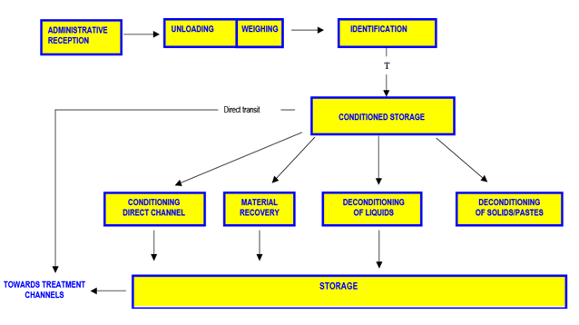
Fig. 13
Les déchets liquides sont pompés et dirigés vers les stockages vrac. Les contenants sont orientés vers différentes filières de traitement, selon leur degré de souillures (broyage + incinération ou lavage + valorisation matière).
BroyageCette filière de pré-traitement a à la fois un rôle de déconditionnement (on obtient un solide vrac en fin de process) et de préparation de charge avant incinération (réduction de la granulométrie et homogénéisation).
Préparation avant Filière DirecteCertains déchets très réactifs (déchets de laboratoire) ne peuvent être déconditionnés sans risque. Ils doivent être injectés tels quels dans le four d’incinération. Ces déchets sont placés, en prenant garde à leur compatibilité, dans des cartons de tailles données, avant transfert vers le système d’introduction du four d’incinération.
L’incinération classique des Déchets Dangereux est une technique basée sur la combustion des déchets dans des fours tournants. Cette combustion est effectuée avec excès d’air à des températures de 850 à 1100°C. Elle ne nécessite un apport de combustible complémentaire qu’au démarrage de l’installation. Par la suite l’alimentation en déchets permet l’auto combustion.
Ce type de traitement assure la minéralisation presque totale des déchets. Elle permet en outre une réduction de 70\
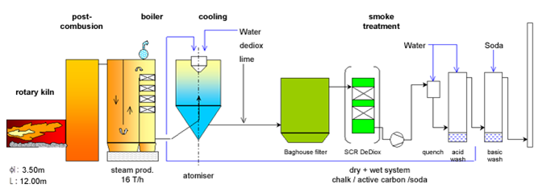
Fig. 14
L’acceptation et la réception des déchets dangereuxLe client désirant faire traiter un déchet dangereux, fournit à SARP Industries un échantillon accompagné d’une fiche de renseignement. Après Analyse Préalable de cet échantillon, le laboratoire détermine la filière d’élimination, et le commercial réalise le contrat de service. A l’arrivé du déchet sur l’usine, un échantillon est prélevé, et une Analyse d’Entrée réalisée, pour vérifier la nature du déchet (comparaison avec les données de l’analyse préalable).
Le stockage des déchets dangereux avant traitementLes solides et les boues sont dépotés dans des fosses de stockage Un brassage régulier des déchets dans les fosses est réalisé à l’aide d’une pelle mécanique et du grappin qui sert également à l’alimentation du four.
Afin d’éviter les odeurs et les envols de poussières, les fosses sont closes et maintenues en dépression (l’air extrait est traité). Elles sont équipées de systèmes de protection incendie. Les liquides sont dépotés dans des stockages (cuves) adaptés et protégés (captation des évents, protection incendie).
Les conditionnés sont déchargés dans une zone spécifique, triés et stockés avant pré-traitement (broyage, pompage, conditionnement Filière Directe…).
L'alimentation du fourLes boues sont pompées par des pompes spéciales et injectées en façade. Les liquides sont pompés depuis les cuves d’alimentation et injectés à travers des lances de pulvérisation dans le four ou dans la post-combustion.
Les conditionnés spéciaux sont introduits directement dans le four par un sas dans la trémie solide. Les liquides spéciaux sont injectés dans des lignes spéciales (poussage à l’azote)
Le four et la postcombustionLes déchets solides introduits sont oxydés thermiquement au fur et à mesure de leur progression dans le four tournant (temps de séjour 30-45 mn). Les gaz issus de la combustion sont totalement oxydés dans la post-combustion, dans laquelle peuvent également être injectés des liquides.
La conduite du four consiste à contrôler et à stabiliser les conditions de combustion (température, qualité des mâchefers…) en tenant compte de l’hétérogénéité des déchets entrants.
Le récupération d'énergieLa chaleur dégagée par la combustion des déchets dangereux peut être récupérée sous forme de vapeur par passage des gaz chauds autour des tubulures de la chaudière. Cette vapeur peut être :
À la sortie de la chaudière les gaz contiennent des polluants qu’il faut traiter : poussières gaz acides métaux lourds… Ce traitement des gaz de combustion comprend trois étapes : le refroidissement, le dépoussiérage et la neutralisation des gaz.
a) Le refroidissement En sortie chaudière, les gaz sont encore trop chauds pour être traités. Ils sont alors refroidis par adjonction d’eau dans un réacteur (tour de refroidissement ou atomiseur)
b) Le dépoussiérage Il s'effectue :
Les poussières récupérées sont chargées en particules solides et en métaux lourds.
c)La neutralisation des gaz Au cours de cette étape un réactif chimique (généralement basique : ) est injecté dans un réacteur pour être mélangé avec les gaz afin de neutraliser les polluants acides. Selon la technique, la base est injectée sous forme pulvérulente (chaux ou bicar dans un filtre à manches) ou sous forme liquide (soude dans des laveurs).
d)Les traitements complémentaires Les dioxines sont absorbées sur un réactif (charbon actif par exemple) ou détruites par oxydation catalytique. Les métaux sont dissous absorbés sur un réactif (charbon actif) ou dissous dans un laveur acide. Les oxydes d’azote sont réduits en azote moléculaire par injection de réactif (ammoniaque, urée…) dans la chaudière ou dans un réacteur catalytique.
L’évacuation des sous-produitsL’incinération des déchets dangereux génère deux ou trois sous-produits :
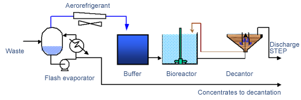
Fig. 15
Dans ce procédé, les buées sont condensées et les condensats sont traités sur une station de traitement biologique des eaux.
Les eaux acides, basiques ou neutres contenant des polluants inorganiques (métaux…) sont détoxifiées (réactions redox) et neutralisées. Les métaux sont alors précipités sous forme d’hydroxydes ; les boues d’hydroxydes sont pressées par un filtre presse et les eaux subissent un traitement final avant rejet.
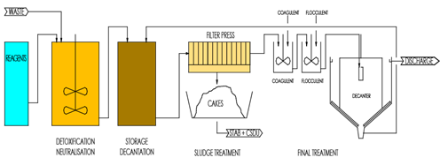
Fig. 16
Les micro-organismes utilisent généralement de la matière organique comme "aliment" pour se développer et survivre. Les procédés de traitement biologique mettent donc à profit et à grande échelle ce type de réaction pour éliminer les pollutions organiques des eaux.
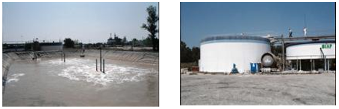
Fig. 17
Le traitement biologique se constitue de plusieurs étapes : Des étapes de pré-traitement, mécaniques, physiques et/ou chimiques, qui permettent d'homogénéiser les effluents de façon à minimiser les variations à l'entrée du traitement biologique (pH, température, concentration de matière organique..).
L'étape de traitement biologique mettant en oeuvre généralement une technique à boues activées en milieu aérobie. Cette technique, la plus répandue, se caractérise par sa robustesse grâce à son principe de base qui, en mettant en oeuvre une forte concentration de micro-organismes à l'intérieur du bioréacteur, permet le traitement des fortes charges organiques, tout en s'adaptant assez bien aux variations de la nature de la pollution organique.
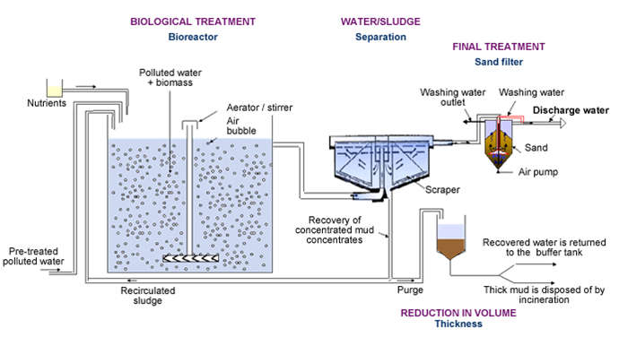
Fig. 18
1. Les prétraitements
Le traitement physico-chimique organique est un des pré-traitements les plus importants chez SARP INDUSTRIES. Il consiste à réaliser une réaction de cassage chimique sur les effluents contenant encore des particules très fines (colloïdes) contribuant à la charge organique, impossibles à séparer de l'eau. Le cassage constitué d'une étape de coagulation et de floculation permet de déstabiliser ces colloïdes, en supprimant leurs forces de répulsion, pour qu'ils se regroupent sous forme de flocs, facilement séparables (par flottation ou décantation).
D'autres prétraitements de type neutralisation, mise à température, homogénéisation, peuvent être réalisés dans des simples cuves de stockage pour permettre d'obtenir un déchet qui ne perturbe pas les conditions de vie des micro-organismes.
2. La biodégradation
Les eaux polluées sont envoyées dans un réacteur qui contient des micro-organismes. Ce réacteur dit "bioréacteur" est communément mis sous agitation, pour la mise en contact des micro-organismes avec la pollution, et sous aération, pour permettre la mise en place des réactions de biodégradation. Les réactions de dégradation de la matière organique mises en jeu lors d'un traitement biologique sont généralement dite "aérobie" (en présence d'oxygène). Elles se réalisent naturellement en présence d'oxygène et sont généralement plus rapides et moins spécifiques que les réactions de biodégradation dites "anaérobies" (sans présence d'oxygène). Elles sont réalisées par tous les micro-organismes présents dans le bioréacteur, plus communément appelés biomasse ou boue. Cette biomasse se compose en majorité de bactéries, puis de prédateurs de bactéries de type protozoaires et métazoaires, et enfin de champignons et d'algues. Ils se nourrissent tous de façons différentes, mais dans un milieu oxygéné. Les métazoaires par exemple, grâce à leur appareil buccal sont capables de saisir les matières insolubles (macromolécules, bactéries, protozoaires…), qui seront ensuite digérées dans leur appareil digestif. Les protozoaires, qui ne possèdent pas tous un orifice buccal, ont la faculté "d'absorption" pour saisir les matières insolubles (bactéries) et solubles. Pour les bactéries et les champignons qui ne s'intéressent qu'à la matière soluble, l'opération de digestion se réalise à l'extérieur de la cellule, grâce à des enzymes qu'ils produisent. Une fois scindée en petites molécules, la pollution est transférée dans la bactérie (ou le champignon) pour y subir des réactions chimiques conduisant à la synthèse d'énergie et de nouvelles bactéries (ou de champignons).
3. La séparation
La pollution organique de l'eau qui se trouvait sous forme soluble est donc éliminée et transformée, en partie, en matière organique insoluble sous forme de micro-organismes. Cette biomasse est ensuite séparée des eaux "propres" par une opération de décantation, réalisée dans un décanteur de type statique (pour les plus simples). Le décanteur permet d'obtenir au niveau de sa partie supérieure, une eau clarifiée (1), et dans sa partie inférieure (conique) une boue concentrée (2). (1) Les eaux clarifiées peuvent être envoyées vers un traitement de finition classique de type filtre à sable ou flottation pour récupérer les boues non décantées et/ou vers un traitement de finition plus coûteux comme des techniques d'oxydation chimique poussées pour détruire la matière organique restante dite "non biodégradable". (2) La boue concentrée est généralement retournée en tête de traitement, dans le bioréacteur, afin de maintenir une concentration en micro-organisme suffisante pour permettre un traitement efficace. Mais, quand la concentration de boues à maintenir est déjà présente dans le bioréacteur, les boues concentrées sont évacuées du système par une simple purge (ce sont les boues en excès).
4. le traitement des boues
Les boues purgées constituent le principal résidu d'un traitement biologique. Issues d'un Centre de traitement de déchets industriels, ces boues seront détruites et jamais valorisées (en traitement d'eaux résiduaires urbaines, elles sont valorisées en agriculture). La voie d'élimination la plus fréquente reste l'incinération, mais le stockage après stabilisation en Centre d'Enfouissement Technique peut être une autre possibilité. Rq : pour limiter les frais générés par le traitement des boues purgées, plusieurs méthodes existent pour réduire leur volume : des méthodes d'épaississement, de déshydratation, de digestion biologique, de conditionnement thermique (chaud ou froid), d'oxydation chimique…
Les déchets concernées issu sont des eaux polluées par des hydrocarbures (huiles) en proportion variable. Le traitement consiste à séparer l’eau de l’huile afin d’orienter cette dernière vers des filière de valorisation (énergétique ou matière). Les eaux sont ensuite orientées vers une unité de traitement biologique ou vers une unité d’évapo-condensation associée à un traitement biologique.
Les boues sont déshydratées (centrifugation) et envoyées en incinération.
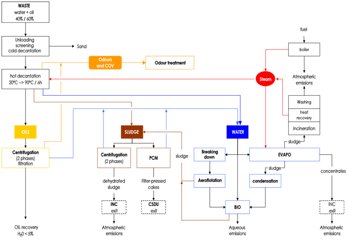
Fig. 19
1- Le traitement des huiles usagées Les eaux polluées sont stockées dans des bacs, puis chauffées à 80°C pendant 24 h. Une première séparation eau / huile s’effectue ainsi : l’huile est récupérée en haut de la cuve, et les eaux, qui contiennent encore des traces d’huile, sont envoyées sur des centrifugeuses. Les huiles issues de ce traitement sont recyclées dans les process pétro-chimiques ou utilisées comme combustible.
2- Le traitement des eaux Les eaux en sortie des centrifugeuse contiennent encore des traces d’huile et ne peuvent être rejetées tel quel dans le milieu naturel. Elles sont traités par voie biologique (voir chapitre Biologique) ou par évapo-condensation associé à un traitement biologique (voir chapitre Evapo).
3- Le traitement des boues Les boues issues des centrifugeuses à huile et du traitement biologique sont déshydraté sur des centrifugeuses 2 phases. L’eau est renvoyées vers la filière « Eaux » et les boues déshydratées sont envoyés en incinération.
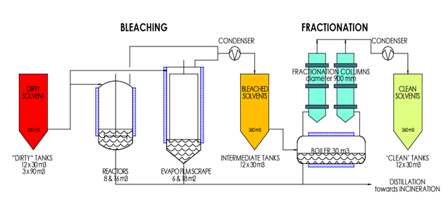
Fig. 20
1- Le blanchissement Les solvants sont évaporés dans un bouilleur. Les vapeurs sont condensées et stockés dans un stockage intermédiaire ; les culots d’évaporation (contenant la majorité des impuretés) sont envoyés en incinération.
2- Le fractionnement Il s’agit d’un procédé de distillation dans lequel les solvants blanchis sont séparés (« fractionnés ») en différentes familles. A l’issu de cette étape, les solvants fractionnés, propres, peuvent être reconditionnés et retournés aux utilisateurs.
Le transport des déchets s’effectue presque exclusivement par la route. Cependant, la voie ferrée et la voie fluviale offrent dans certains cas des alternatives intéressantes.
RouteLes déchets sont transportés par des ensembles porteur + remorque quand il s’agit de caissons amovibles (bennes ouvertes ou caissons de compacteur), ou par des ensembles tracteurs + semi-remorques. La charge utile, limitée par le code de la route, varie de 18 à 24 tonnes en fonction des véhicules et de la densité des déchets.
Avantages : souplesse d’exploitation; coûts bien maîtrisés; autonomie; s’adapte à toutes les situations. Inconvénients : faible charge transportée (24 tonnes maximum); engorgement des routes; pollution; image.
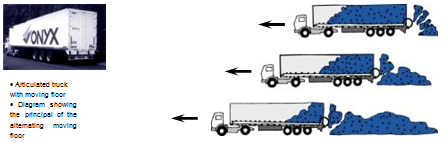
Fig. 21
Fer, fleuveL’exemple le plus typique de transport de déchets par voie ferrée est celui de Marseille, d’où partent quotidiennement 1500 t de déchets vers la décharge d’Entressens. À Liège, l’usine d’incinération est partiellement alimentée par un transfert fluvial. Souvent, les déchets sont préalablement compactés dans des caissons de 25 à 40 m3 et ce sont ces caissons qui sont chargés sur les wagons ou dans les barges.
Avantages : très grosse capacité de transport par convoi; mode de transport écologique, bien adapté pour de longues distances et de gros tonnages. Inconvénients : nécessite en général la reprise des déchets par des camions, sinon les infrastructures de déchargement peuvent être très importantes; dépendance de l’opérateur du transport (SNCF ou compagnie fluviale); impose de prévoir une solution de secours par la route.
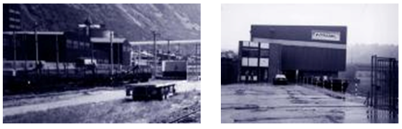
Fig. 22
Ferrée. Ce système est envisageable pour les zones rurales (voir photographie de la page suivante).
Plusieurs mots assez similaires sont utilisés pour parler de tri et de recyclage, mais ils sont souvent confondus ou les nuances sont perdues. Vous trouverez ci-dessous la signification des termes clés utilisés.
Récupérer les déchets : c’est le sortir de son circuit traditionnel de collecte et de traitement. Par exemple, mettre les bouteilles de verre ou des journaux dans les bornes d’apport volontaire au lieu de les jeter à la poubelle. La récupération se situe en amont de la valorisation, qui consiste à donner une valeur marchande à ces déchets. La valorisation peut prendre différentes formes :La valorisation peut prendre différentes formes :
Le schéma ci-dessous présente les différents circuits de recyclage des déchets.
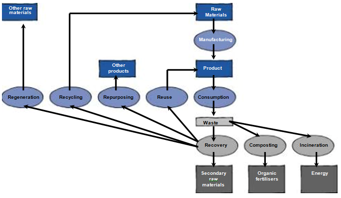
Fig. 23
En sortie des centres de tri ou de récupération, les matières premières secondaires suivent des filières plus ou moins complexes, avant de rejoindre le circuit de fabrication de produits manufacturés.
Papier, cartonCes produits sont recyclés ou régénérés dans les papeteries, principalement pour la fabrication des cartons ondulés ou de papier journal.
VerreLe verre collecté est préparé par tri complémentaire chez des récupérateurs pour donner une matière première secondaire, appelée « calcin », qui alimente les fours des verriers, principalement pour la fabrication de bouteilles. Une bouteille produite avec 80\
PlastiquesLe terme « plastique » regroupe une vingtaine de matières aux caractéristiques différentes. À part quelques filières de recyclage des plastiques en mélange, la valorisation des plastiques nécessite des installations importantes de traitement : sur-tri, lavage, broyage, mise sous forme de granulés. En France, sur 1,2 million de tonnes d’emballages plastiques produites, seulement 12000 t sont actuellement récupérées (1\
Quelques exemples de valorisation des plastiques d’emballages ménagers :
Les ferrailles servent de matière première pour la production d’acier par la filière électrique. La sidérurgie française utilise 9 millions de tonnes de vieilles ferrailles pour une production de 18 millions de tonnes d’acier; 1 tonne d’acier recyclé permet l’économie de 1,5 tonne de minerai de fer, de 70\
AluminiumL’aluminium récupéré subit une opération d’« affinage » : sur-tri mécanique, broyage, fusion, traitement chimique. L’aluminium de deuxième fusion ainsi produit est utilisé par l’industrie automobile (pièces mécaniques, principalement). Une tonne d’aluminium recyclé permet d’économiser 95\
Huiles usagéesEn France, elles sont récupérées par des collecteurs spécialisés. La quantité ramassée est d’environ 230000 tonnes, avec un taux de collecte de plus de 85\
BoisLes palettes ou autres emballages en bois trouvent des débouchés en réemploi après remise en état, en réutilisation (panneaux de particules, ameublement) ou en valorisation thermique dans les chaufferies.
GravatsLeur débouché classique est la décharge de classe 3 (pour produits inertes). Ce mode d’évacuation se justifie plus par des raisons économiques que comme valorisation (remblais). Localement, certains gravats se substituent aux matériaux de construction pour des applications bien ciblées (sous-couches de roulement…).
Aspects économiquesLes matières premières secondaires sont en fait des matières premières; elles sont soumises aux contraintes d’un marché concurrentiel, qui peut parfois être mondial : fluctuation des cours en fonction de l’offre et de la demande (cours des vieux papiers divisé par dix entre juillet 1995 et novembre 1995), concurrence de matières premières, contraintes techniques fluctuantes, apparition ou disparition de filières… Cependant, en France, des organismes, comme Éco-Emballages ou Adelphe pour les emballages ménagers, des papetiers, comme Golbey ou Chapelle-d’Arblay pour les journaux-magazines, garantissent des débouchés et des cours de reprises, pérennisant par là même la mise en place de collectes sélectives et d’équipements de tri.